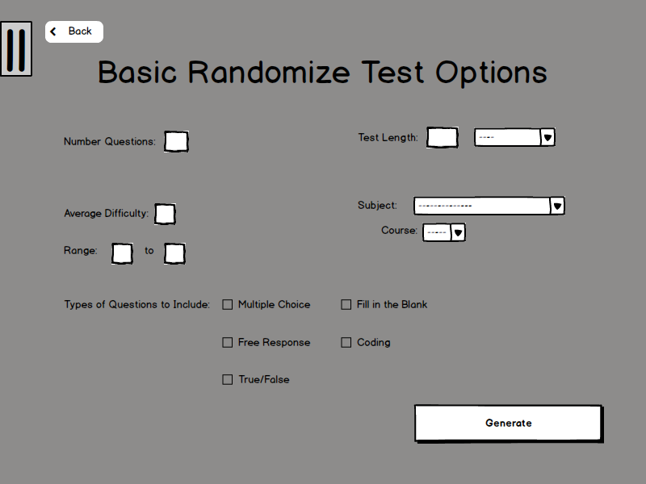
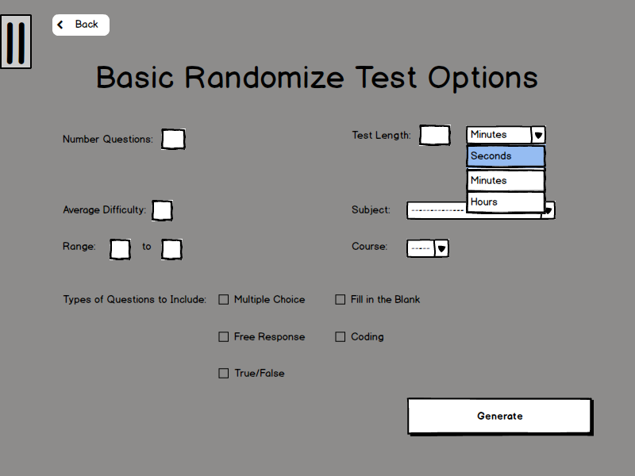
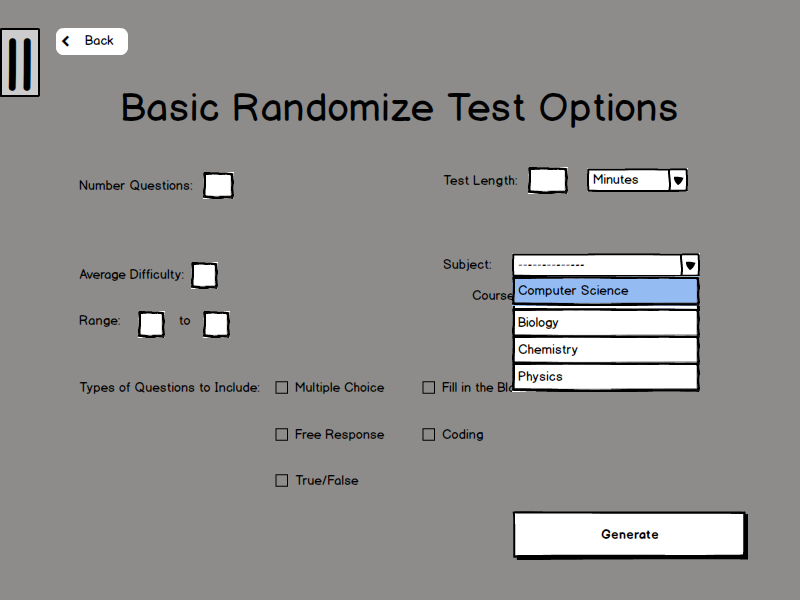
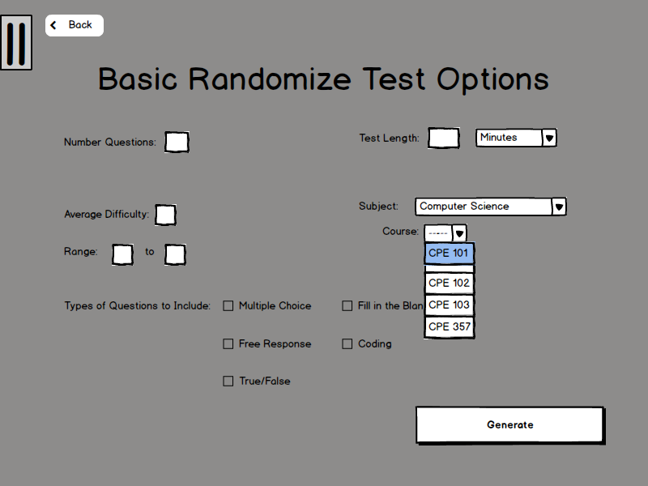
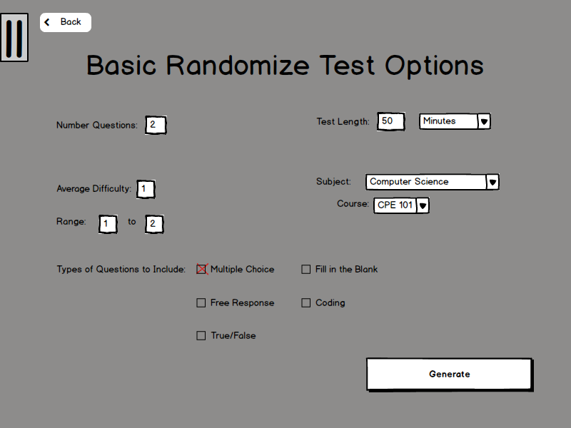

2.2.1.1. Generate a Basic Random Test From Question Bank
The User will come to this page as shown in Figure 2-3.

Figure 2-3
To create a random test the user will use the Test Length Drop Down Box and click on the units of time they want as shown in Figure 2-3.

Figure 2-4
The User will then Click on the Subject Drop Down Box and select the type of Subject they want in the test as shown in Figure 2-4.

Figure 2-5
After Selecting the Subject, the User will proceed to select the Course Drop Down Box of the course they want the questions from as shown in Figure 2-5.

Figure 2-6
Finally, the User will fill in:
1. Number of Questions Text Box which will specify the number of questions in the test.
2. Test Length Text Box which will generate the test to match the test length based on the avg. time a question will take.
3. Average Difficulty which will choose questions to match the overall average difficulty of questions.
4. Range to specify what range of difficulty so that higher difficulty questions or lower difficulty questions won't be chosen.
5. And the user will Select a Checkbox which will specify the types of questions the user wants to include in the test.
6. The user will then click on Generate which will take them to the test menu to review.

Figure 2-7
Prev: [none]
| Next: Create a test with new questions
| Up: browsing
| Top: index